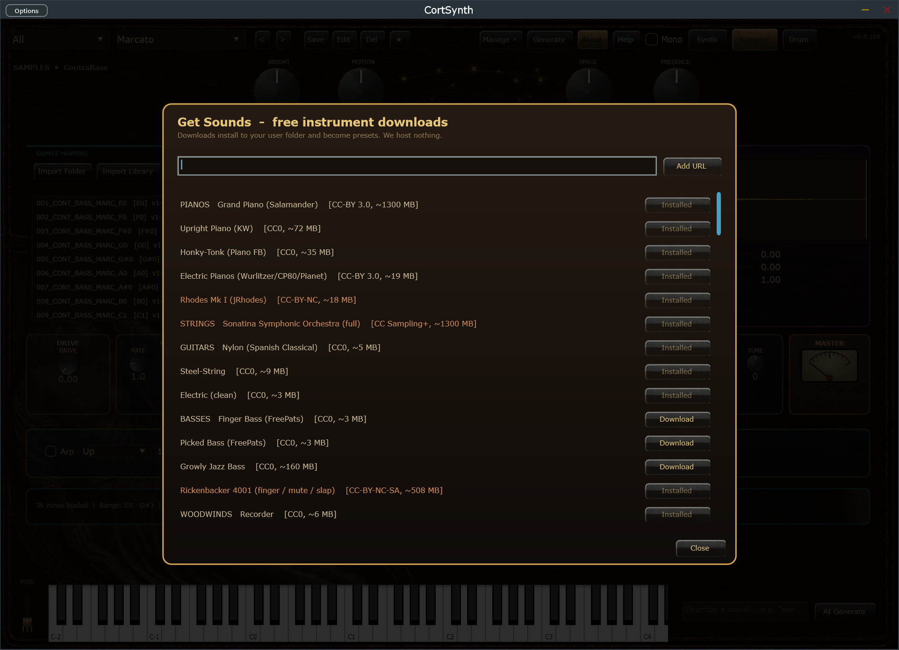
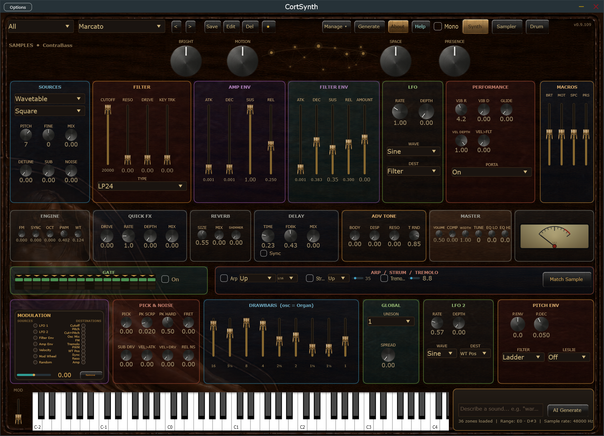
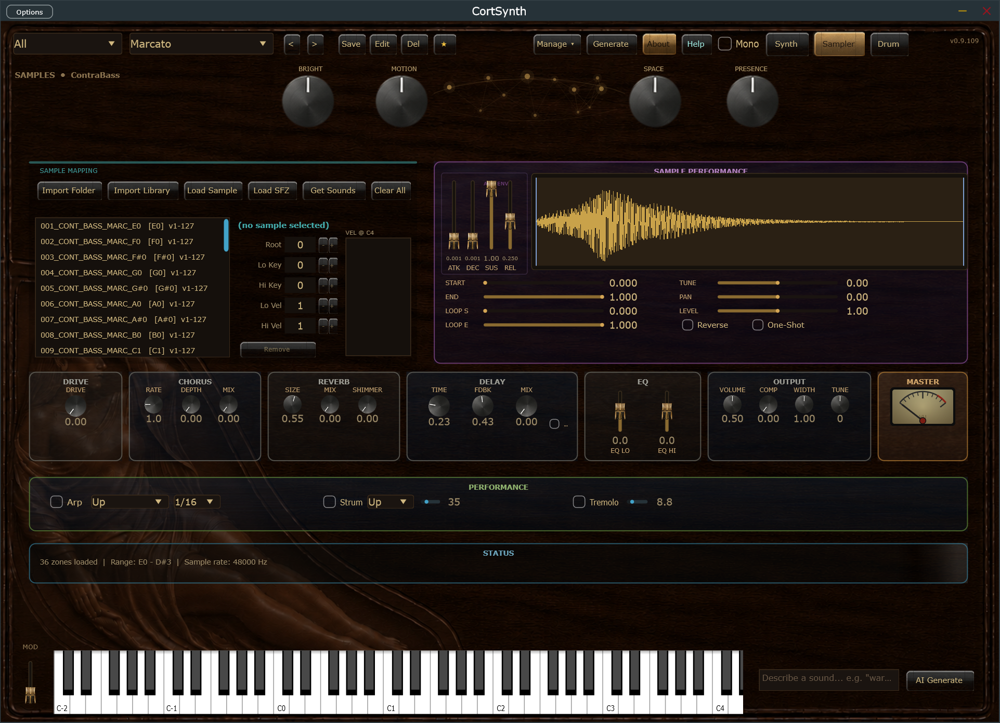
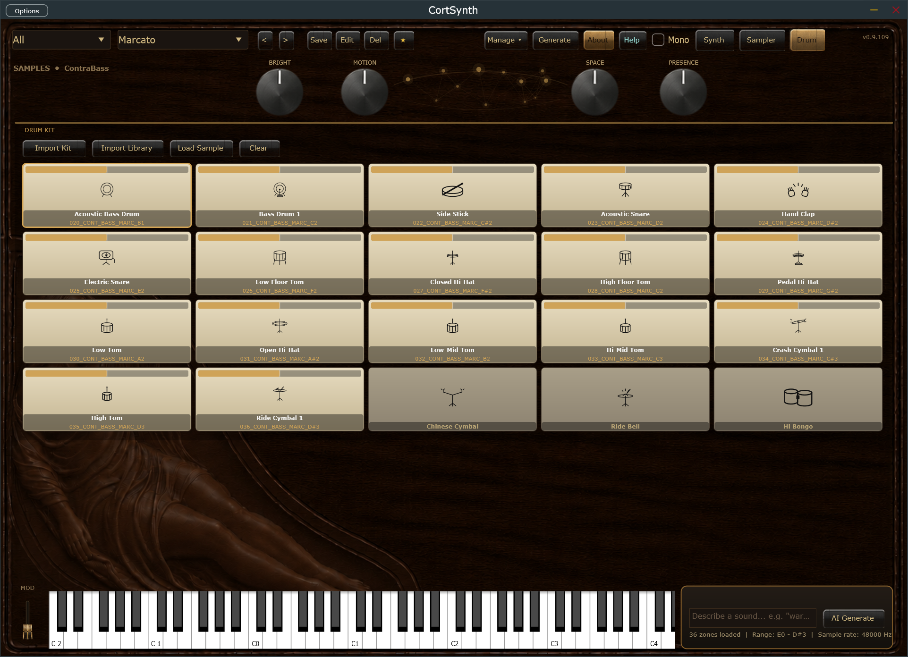
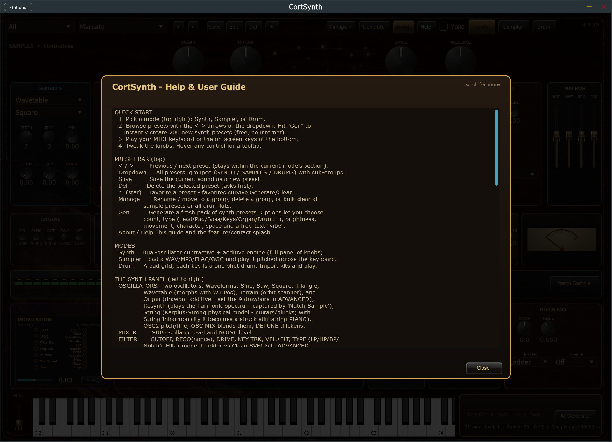

A deep hybrid synth, a sampler, and a drum machine — with an organ that spins a Leslie, a piano you can shape, guitars, pads that breathe, basses that hit, and an AI that builds patches from a sentence. The "everything" instrument, in one plugin slot.
Free. No account, no nag screens, no expiry.
Why you'll want it
Flip between a deep hybrid synth, a sampler, and a drum machine with a playable pad grid — all in one plugin, one window.
2× oversampled voices, an analog-voiced ladder filter and a clean modern filter, a lush FDN reverb with shimmer, body resonance, a rotary Leslie, tempo-synced delay, and a transparent glue limiter.
Dual oscillators with wavetable, wave-terrain, drawbar-organ and resynthesis modes; FM, sync, PWM, unison; two LFOs, a drag-to-wire Modulation Constellation, and four macro knobs that move everything at once.
Generate hundreds of presets instantly and offline. Or describe a patch in plain English with the AI Tone Designer. Or drop in audio and let Match Sample resynthesize the real instrument into an editable preset.
Real velocity response, touch-sensitive brightness, glide, arpeggiator, strum, humanized tremolo, an on-screen keyboard and mod wheel, and a trance gate.
Leads, pads, basses, keys, guitars, pianos, organs, strings, brass, bells, atmospheres and textures — plus ready-to-play drum kits.
Sounds & presets
CortSynth ships with 200+ handcrafted-quality presets across every category, plus drum kits you can play out of the box. Press one button to generate a whole new pack offline, for free.
It's also a real sampler. Hit Get Sounds to one-click download free instrument packs — pianos, electric pianos, strings, guitars, woodwinds and more — which install straight into your preset list.

Under the hood
The instruments aren't just samples. Strings and plucks are physically modeled (Karplus-Strong), the piano uses a dispersive stiff-string model with a resonating soundboard and sympathetic strings, and tremolo re-energizes the string the way a real player's pick does.
Everything is built for clarity: oversampled oscillators and drive to keep harmonics clean, dual filter characters (vintage ladder + transparent modern), a feedback-delay-network reverb with shimmer, a true rotary Leslie, and a glue limiter so presets land loud and mix-ready.
The audio engine has zero heap allocations on the real-time thread — every buffer, coefficient, and sequence is pre-allocated. It's built for low-latency live performance.

A look around



Free — and here's why
I built CortSynth because it's the instrument I always wanted, and I'd rather it be in your projects than behind a paywall. It's completely free to download and use, forever.
If it earns a place in your music, a $20 donation is hugely appreciated — but never required. It just helps me keep building.
Get it
Drop the VST3 in your plugins folder (or run the standalone), open your DAW, and play. Built-in Help has the full guide; hover any knob for a tooltip.